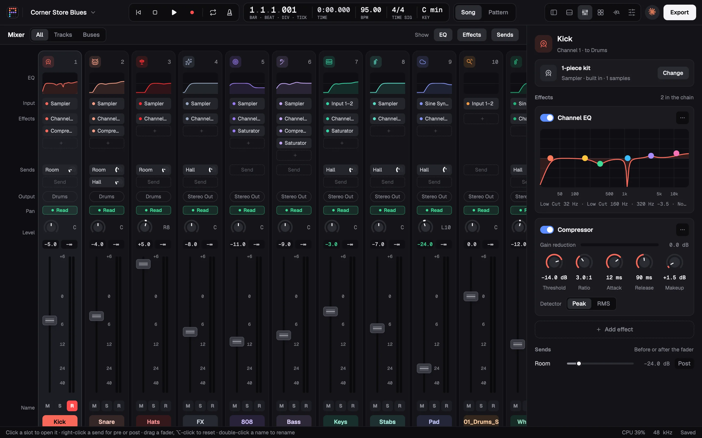
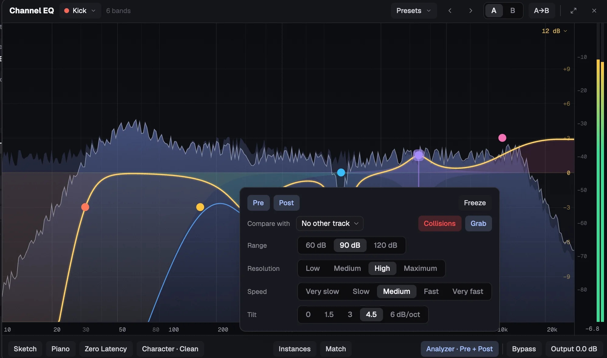
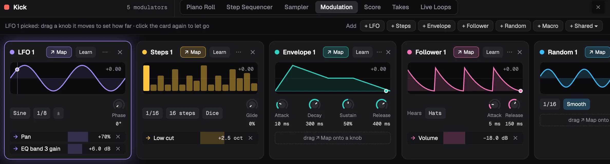

Free and open source / Version 0.3.0
Make music with an agent. Hear every edit land.
Pina Studio is a DAW where Claude Code, Codex or any agent works in your song with you. You play; it writes, arranges, mixes and masters, and every step it takes lands in the song in front of you as an edit you can undo.
pina do command at a time. Watch it get made
Session replay
Watch a beat get built, one command at a time.
Corner Store Blues was made by a script that works the way an agent does: one pina do command at a time. These are real lines from its build, laid along the song where each one lands. With the song open in Pina Studio, each one shows up on screen as a single edit you can undo.
-
IntentA boom-bap beat at 95 BPM, in C minor.
pina new "Corner Store Blues"pina do song '{"op":"set_tempo","bpm":95}'pina do song '{"op":"set_key","key":"C minor"}'A new song at 95 BPM in C minor, right there in the top bar.
-
IntentA kick from samples, and a pattern for the verse.
pina do song '{"op":"add_track","name":"Kick","instrument":{"sampler":{"zones":[…]}}}'pina do song '{"op":"add_pattern_region","track":0,"start":15360,"length":61440,"step":240,"rows":[…]}'⋯ then the rest of the kit, the same way
A sampler kick playing a 16-bar pattern from bar 5 on sixteenths: tick 15,360 is bar 5, and a step of 240 is a sixteenth.
-
IntentMark where the hook comes in.
pina do song '{"op":"add_marker","tick":76800,"name":"Hook"}'A Hook marker at bar 21. At 3,840 ticks to a bar, 76,800 is twenty bars in.
-
IntentBring the bass back for verse two, tighten it, and slow the keys loop for the break.
pina do song '{"op":"add_alias","track":5,"region":0,"start":107520}'pina do song '{"op":"edit_notes","track":5,"region":0,"edit":{"kind":"quantize","grid":240,"strength":1}}'pina do song '{"op":"flex_region","track":6,"region":1,"length":7680}'The bass comes back at bar 29 as an alias, its notes snapped to sixteenths at full strength; the keys loop plays at half time in the break.
-
IntentMix it, then master it to the genre's loudness.
pina mix songpina master songEach part's EQ, compression, saturation, pan, reverb and level, set from its own measured sound. Then a master at the genre's loudness.

-
IntentWhat's still wrong with it?
pina critique songWhat's wrong, worst first, from clashing notes to tonal balance, each with the command that fixes it.

-
Your noteMake the hook hit harder.
pina ask song "make the hook hit harder"Notes in plain words, answered in edits you can hear and undo. And every track, region and knob stays yours, down to the Kick's five modulators.

Agents, built in
Give notes like you would to a producer.
Claude Code and Codex live in the Agent panel ⌘L, or take your notes from a terminal. Each runs on your own account, with Pina Studio's tools as its only tools.
-
“make the hook hit harder”
The critic checks for a hook weaker than its verse.
-
“write a bassline that follows the chords”
Theory writes it in key, voice-led, with the genre's groove.
-
“find a dusty keys loop in C minor”
Samples are found by what they sound like.
-
“pick a genre for this song”
Seventeen playbooks, lo-fi to amapiano.
-
“what's wrong with it? fix the worst first”
Every problem comes with the command that fixes it.
-
“master it to the genre's loudness”
Mix targets are measured from released songs.
In the room, not in a chat window.
With the song open, the agent shows up the way a collaborator does in a shared file.
-
1
Its avatar sits in the top bar.
-
2
An outline and a cursor mark what it just changed.
You see the edit where it happened, not in a log.
-
3
Each edit is one undo.
Keep what you like. Step back through the rest.
Notes from a terminal show up in the panel too: pina ask <song> "…"
What Pina Studio brings
An agent can't hear, and isn't a musician. So Pina Studio does the parts it would get wrong.
-
01
Playbooks
Seventeen genres, lo-fi to amapiano: tempo, swing, keys, the parts and how to write them, sections, progressions, and mix targets measured from released songs. Each one is editable on its own page.
pina playbook lofi -
02
Theory
Chords and progressions for a key and a mood. Bass, chords, melodies and drums written in key, voice-led, with a genre's groove.
pina theory "A minor" dark trap -
03
A critic
What's wrong, worst first: clashing notes, a bass off its chords, robotic velocities, a hook weaker than its verse, clipping, tonal balance. Each comes with the command that fixes it.
pina critique song -
04
Mixing by measurement
Each part's EQ, compression, saturation, pan, reverb and level, set from its own measured sound. Then mastered to the genre's loudness.
pina mix songpina master song -
05
Sounds and samples
Real presets from the instruments you have installed. Samples found by what they sound like, and kits that fit the song's key and tempo.
pina samples find "dusty keys loop in C minor 95 bpm" -
06
Song Study
A finished song taken apart from its audio: tempo, key, chords, form, groove, and its lyrics' rhymes and hooks. Only its title, artist and length are sent anywhere, never its audio.
pina study song.mp3
Listen
Two songs. Take them apart.
Midnight Drive was made entirely with pina do commands, the way an agent would make it, on Pina Studio's built-in instruments. Corner Store Blues is the boom-bap beat from the replay, on real samples. These are their real stems, bounced with pina bounce --stems. Mute them, solo them, and the light follows whatever is left.
Five stems, about 2.3 MB. Nothing loads until you press play.
- Drums
- Bass
- Keys
- Lead
- Pad
Six stems, about 2.8 MB. Nothing loads until you press play.
- Drums
- 808
- Bass
- Keys
- Stabs
- Pad & Whistle
A whole studio
The agent's studio is your studio.
Everything the agent touches is a real part of a real studio, and none of it needs an agent. Play it, write it, shape it and mix it yourself, with your own plugins.
Chords as coloured notes, quantize and swing, tools that humanize, strum, chop and arpeggiate, and a velocity lane. Plus score view, musical typing, and MIDI and audio recording.
Pads, steps per sound, and settings per step: velocity, chance, pitch, repeat, gate and nudge. Modulate a lane, Euclid it, randomize it. A sampler with zones, slices, layers and round robins sits behind the pads.
LFO, steps, envelope, follower, random and macro, on any setting and any plugin parameter, and shared across a stack. Automation on every control too: Read, Touch, Latch, Trim and Write, with curves and shapes.
Up to 24 bands, dynamic bands, natural and linear phase, spectral dynamics, EQ Match, Spectrum Grab, and collisions with another track. A compressor and a saturator beside it.
A binaural panner that places a sound all round the head: in front, beside, behind, above or below. Made for headphones.
Arrange
Regions that loop, trim, fade and time-stretch. Markers, cycle, aliases, take folders with comping, Live Loops, track stacks, sends and aux buses, and plugin delay compensation.
Plugins
VST3CLAPVST2Audio Units
Scanned, played and automated, with their own windows shown. Audio Units on macOS.
Bounce
The mix, stems or sections, to a loudness, with tails. Unsaved edits are kept every 30 seconds and offered back.
- Space plays
- R records
- C cycle
- K metronome
- ⌘L agent panel
Open by default
Read it. Build it. Change it.
MIT licensed and written in Rust from top to bottom. The interface is drawn on the GPU; the built-in effects and instruments are written in Faust. And it works with whichever agent you like.
- License
- MIT
- Written in
- Rust
- Interface
- Drawn on the GPU, with gpui
- Effects and instruments
- Faust
- Agents
- Claude Code and Codex built in; any other through MCP or the CLI
- Runs on
- macOS, Apple silicon and Intel · Windows x64
Add it to Claude Code
Any agent, through MCP
An MCP server with 22 tools:
- show
- edit
- analyze
- render
- critique
- playbook
- theory
- mix
- master
- sounds
- samples
- plugins
- and more
Or one command at a time
pina do <song> '<json>' changes a song one command at a time; pina describe lists every command.
Build it from source
It's late. Make something.
Pina Studio is free and open source, for macOS and Windows.
macOS
Apple silicon and Intel. A disk image with an installer.
Disk image (.dmg)It isn't notarized yet. If macOS won't open it: System Settings › Privacy & Security › Open Anyway.
Windows
x64. A per-user installer, no administrator needed, or a zip.
Installer (.exe) ZipThe installer isn't code-signed yet. If SmartScreen stops it, choose More info › Run anyway.